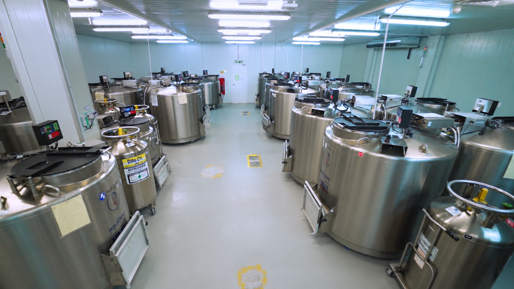
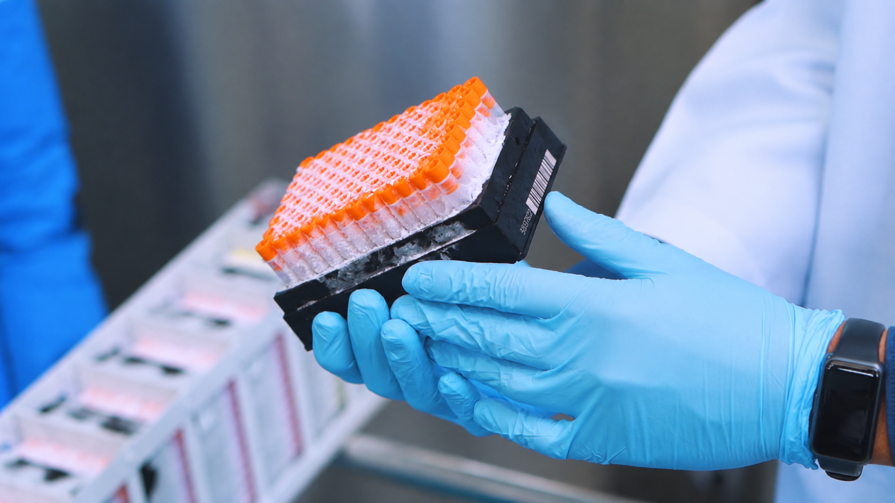

Participants & health data
The cohort brings together information from participants across Malaysia for long-term study.
Explore how TMC’s long-term collection supports research. Facility details and current inventories should always be checked on UKM’s official pages.

Photograph from the supplied TMC image archive.
UKM says the TMC biobank was established in 2005 under the cohort project. It stores health data and biospecimens collected for basic testing and research purposes.
The official site describes blood and urine samples, sample storage, processing laboratories, and analysis equipment. This preview omits equipment counts until owners confirm the latest inventory.
Read the official biobank page ↗A simple orientation to the topics covered by the current UKM pages.
The cohort brings together information from participants across Malaysia for long-term study.
The biobank stores samples in facilities and equipment described by UKM.
Research activity and publication information are maintained on UKM’s current website.
UKM describes the TMC processing laboratory, DNA storage laboratory, and analysis laboratory. The biobank preserves biospecimens for basic testing and health research.
Read the UKM description of facilities, equipment, and sample types.
Open UKM page ↗Browse the current UKM research page for approved information.
Open UKM page ↗
Photograph from the supplied TMC image archive.